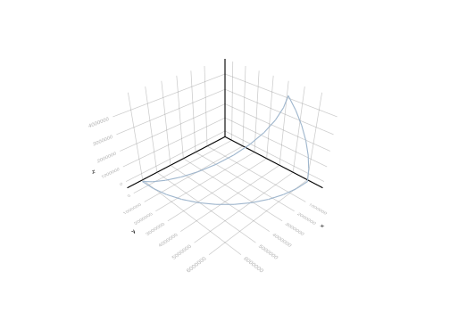
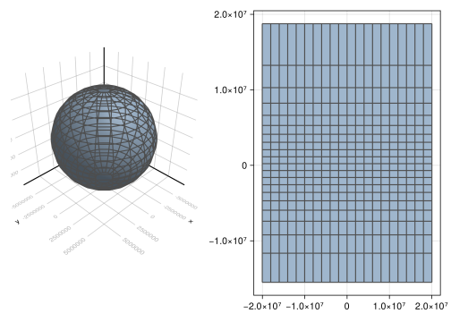
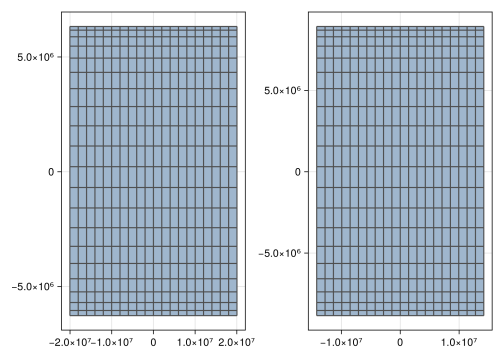
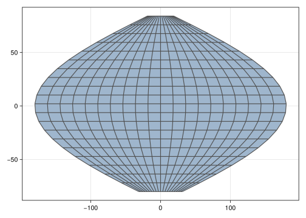
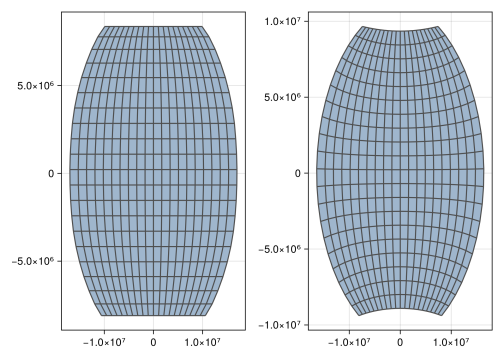

point = Point(1, 2)Point with Cartesian{NoDatum} coordinates
├─ x: 1.0 m
└─ y: 2.0 mIn this chapter, we detach the concept of Point from its geospatial coordinates in a given coordinate reference system (CRS). We explain how the same point in the physical world can be represented with multiple geospatial coordinates, and illustrate various types of CRS catalogued in the EPSG Dataset.
The framework classifies the various CRS as Basic, Geographic or Projected, all of which can depend on a geodetic datum. The following sections introduce these very important concepts in geospatial data science, as well as the Proj transform for CRS conversion.
In previous chapters, the construction of geometries assumed a Cartesian Coordinate Reference System, or CRS for short. In all previous examples, we constructed Points with Cartesian coordinates in m units:
point = Point(1, 2)Point with Cartesian{NoDatum} coordinates
├─ x: 1.0 m
└─ y: 2.0 mThese coordinates can be retrieved with the coords function:
cart = coords(point)Cartesian{NoDatum} coordinates
├─ x: 1.0 m
└─ y: 2.0 mOther units from Unitful.jl can be specified with the u"..." syntax:
Point(1u"ft", 2u"cm")Point with Cartesian{NoDatum} coordinates
├─ x: 0.3048 m
└─ y: 0.02 mThe syntax
Point(x, y, ...)is an alias to
Point(Cartesian(x, y, ...))To represent the same point in a Polar CRS, in terms of a radius ρ and an angle ϕ, we can convert its coordinates and reconstruct the point:
polar = convert(Polar, cart)Polar{NoDatum} coordinates
├─ ρ: 2.23606797749979 m
└─ ϕ: 1.1071487177940904 radPoint(polar)Point with Polar{NoDatum} coordinates
├─ ρ: 2.23606797749979 m
└─ ϕ: 1.1071487177940904 radEven though this process is transparent, it would be very tedious to perform this conversion for all Points of Geometrys in a domain of a GeoTable, and reconstruct the result efficiently. That is where the Proj transform becomes useful:
Point(1, 2) |> Proj(Polar)Point with Polar{NoDatum} coordinates
├─ ρ: 2.23606797749979 m
└─ ϕ: 1.1071487177940904 radThis transform takes vectors of Geometrys, Domain or GeoTable and converts the underlying coordinates to a given target CRS efficiently, exploiting lazy representations of Grids:
CartesianGrid(100, 100, 100) |> Proj(Cylindrical)100×100×100 TransformedGrid
1030301 vertices
├─ Point(ρ: 0.0 m, ϕ: 0.0 rad, z: 0.0 m)
├─ Point(ρ: 1.0 m, ϕ: 0.0 rad, z: 0.0 m)
├─ Point(ρ: 2.0 m, ϕ: 0.0 rad, z: 0.0 m)
├─ Point(ρ: 3.0 m, ϕ: 0.0 rad, z: 0.0 m)
├─ Point(ρ: 4.0 m, ϕ: 0.0 rad, z: 0.0 m)
⋮
├─ Point(ρ: 138.62178760930766 m, ϕ: 0.8058034940839864 rad, z: 100.0 m)
├─ Point(ρ: 139.31618714277246 m, ϕ: 0.8006254127745656 rad, z: 100.0 m)
├─ Point(ρ: 140.0142849854971 m, ϕ: 0.7954988299827702 rad, z: 100.0 m)
├─ Point(ρ: 140.71602609511115 m, ϕ: 0.7904232467282607 rad, z: 100.0 m)
└─ Point(ρ: 141.4213562373095 m, ϕ: 0.7853981633974483 rad, z: 100.0 m)
1000000 elements
├─ Hexahedron(1, 2, 103, 102, 10202, 10203, 10304, 10303)
├─ Hexahedron(2, 3, 104, 103, 10203, 10204, 10305, 10304)
├─ Hexahedron(3, 4, 105, 104, 10204, 10205, 10306, 10305)
├─ Hexahedron(4, 5, 106, 105, 10205, 10206, 10307, 10306)
├─ Hexahedron(5, 6, 107, 106, 10206, 10207, 10308, 10307)
⋮
├─ Hexahedron(1019994, 1019995, 1020096, 1020095, 1030195, 1030196, 1030297, 1030296)
├─ Hexahedron(1019995, 1019996, 1020097, 1020096, 1030196, 1030197, 1030298, 1030297)
├─ Hexahedron(1019996, 1019997, 1020098, 1020097, 1030197, 1030198, 1030299, 1030298)
├─ Hexahedron(1019997, 1019998, 1020099, 1020098, 1030198, 1030199, 1030300, 1030299)
└─ Hexahedron(1019998, 1019999, 1020100, 1020099, 1030199, 1030200, 1030301, 1030300)Although the conversion between Basic CRS doesn’t affect the position of points:
Point(cart) ≈ Point(polar)trueIt can be useful to write geospatial algorithms in terms of specific coordinates of interest:
cart.x1.0 mcart.y2.0 mpolar.ρ2.23606797749979 mpolar.ϕ1.1071487177940904 radAll coordinate values in the framework have well-defined units to facilitate the development of geospatial applications with full support for different unit systems (e.g., English units).
Unitful coordinate values address many pitfalls in geospatial applications. A simple comparison of coordinate values without units can lead to major engineering failures such as the roller coaster derailment at Tokyo Disneyland’s Space Mountain.
Consider writing algorithms with units to avoid trivial issues in critical applications:
cart.x < 2u"ft"falseustrip(cart.x) < 2trueThe result of the coords function is not a vector, and therefore cannot be used in linear algebra. To retrieve the Vec from the origin of the CRS to the given Point, use the to function instead:
to(point)Vec(1.0 m, 2.0 m)This utility function will always convert the CRS of the coordinates of the Point to Cartesian before returning the static vector:
p = Point(polar)Point with Polar{NoDatum} coordinates
├─ ρ: 2.23606797749979 m
└─ ϕ: 1.1071487177940904 radv = to(p)Vec(1.0000000000000002 m, 2.0 m)Unlike Basic CRS, which are commonly employed in engineering applications where the geospatial domain is small compared to the Earth, Geographic CRS depend on a geodetic datum:
A geodetic datum is the combination of a ellipsoid of revolution (a.k.a., spheroid) that approximates the surface of the Earth and a reference physical point that identifies the origin of the CRS.
To illustrate this concept, we start with the most widely used Geographic CRS:
latlon = LatLon(0, 90)GeodeticLatLon{WGS84Latest} coordinates
├─ lat: 0.0°
└─ lon: 90.0°LatLon is an alias for GeodeticLatLon.
In the geodetic LatLon CRS, the longitude coordinate is the horizontal angle measured in degrees from the Greenwich (or prime) meridian:
latlon.lon90.0°The latitude coordinate is the vertical angle measured in degrees from the Equator parallel:
latlon.lat0.0°The geodetic datum of this CRS can be retrieved with the datum function:
datum(latlon)WGS84Latest (alias for WGS84{2296})
It contains the ellipsoid of revolution:
ellipsoid(datum(latlon))CoordRefSystems.WGS84🌎as well as other parameters used to convert from longitude and latitude angles to Cartesian coordinates in meters:
convert(Cartesian, latlon)Cartesian{WGS84Latest} coordinates
├─ x: 3.905482530786651e-10 m
├─ y: 6.378137e6 m
└─ z: 0.0 mIn this case, the WGS84Latest datum is propagated to the Cartesian CRS, which is no longer the default NoDatum of previous examples. The datum is used to display geometries with their actual shapes and sizes in the physical world:
A = Point(LatLon(0, 0))
B = Point(LatLon(0, 90))
C = Point(LatLon(45, 90))
segments = [Segment(A, B), Segment(B, C), Segment(A, C)]
viz(segments)┌ Warning: Found `resolution` in the theme when creating a `Scene`. The `resolution` keyword for `Scene`s and `Figure`s has been deprecated. Use `Figure(; size = ...` or `Scene(; size = ...)` instead, which better reflects that this is a unitless size and not a pixel resolution. The key could also come from `set_theme!` calls or related theming functions.
└ @ Makie ~/.julia/packages/Makie/We6MY/src/scenes.jl:227
All datum parameters are stored in the CRS type itself at compile time, and are statically retrieved by the Julia compiler during CRS conversion. This leads to extremely efficient code, and consequently extremely efficient Projections of large geotables.
Below is a more familiar example loaded with the GeoIO.jl module:
using GeoIO
world = GeoIO.load("data/countries.geojson")| COUNTRY | REGION | geometry |
|---|---|---|
| Categorical | Categorical | MultiPolygon |
| [NoUnits] | [NoUnits] | 🖈 GeodeticLatLon{WGS84Latest} |
| Fiji | Melanesia | Multi(3×PolyArea) |
| Tanzania | Eastern Africa | Multi(1×PolyArea) |
| W. Sahara | Northern Africa | Multi(1×PolyArea) |
| Canada | Northern America | Multi(30×PolyArea) |
| United States of America | Northern America | Multi(10×PolyArea) |
| Kazakhstan | Central Asia | Multi(1×PolyArea) |
| Uzbekistan | Central Asia | Multi(1×PolyArea) |
| Papua New Guinea | Melanesia | Multi(4×PolyArea) |
| Indonesia | South-Eastern Asia | Multi(13×PolyArea) |
| Argentina | South America | Multi(2×PolyArea) |
| ⋮ | ⋮ | ⋮ |
The GeodeticLatLon CRS is displayed in the subheader of the geometry column. It is used internally by the framework for advanced visualization and geometric processing:
world |> Select("REGION") |> viewer┌ Warning: Found `resolution` in the theme when creating a `Scene`. The `resolution` keyword for `Scene`s and `Figure`s has been deprecated. Use `Figure(; size = ...` or `Scene(; size = ...)` instead, which better reflects that this is a unitless size and not a pixel resolution. The key could also come from `set_theme!` calls or related theming functions.
└ @ Makie ~/.julia/packages/Makie/We6MY/src/scenes.jl:227
We can convert the GeodeticLatLon CRS to a GeocentricLatLon CRS where the latitude coordinate is measured with respect to the center of the ellipsoid:
world |> Proj(GeocentricLatLon)| COUNTRY | REGION | geometry |
|---|---|---|
| Categorical | Categorical | MultiPolygon |
| [NoUnits] | [NoUnits] | 🖈 GeocentricLatLon{WGS84Latest} |
| Fiji | Melanesia | Multi(3×PolyArea) |
| Tanzania | Eastern Africa | Multi(1×PolyArea) |
| W. Sahara | Northern Africa | Multi(1×PolyArea) |
| Canada | Northern America | Multi(30×PolyArea) |
| United States of America | Northern America | Multi(10×PolyArea) |
| Kazakhstan | Central Asia | Multi(1×PolyArea) |
| Uzbekistan | Central Asia | Multi(1×PolyArea) |
| Papua New Guinea | Melanesia | Multi(4×PolyArea) |
| Indonesia | South-Eastern Asia | Multi(13×PolyArea) |
| Argentina | South America | Multi(2×PolyArea) |
| ⋮ | ⋮ | ⋮ |
or to a geodetic LatLonAlt, which also includes the altitude coordinate in meters:
world |> Proj(LatLonAlt) |> domain |> firstMultiPolyArea
├─ PolyArea((lat: -16.0671°, lon: 180.0°, alt: 0.0 m), ..., (lat: -16.5552°, lon: 180.0°, alt: 0.0 m))
├─ PolyArea((lat: -17.5048°, lon: 178.126°, alt: 0.0 m), ..., (lat: -17.3399°, lon: 178.374°, alt: 0.0 m))
└─ PolyArea((lat: -16.0209°, lon: -179.793°, alt: 0.0 m), ..., (lat: -16.5018°, lon: -179.917°, alt: 0.0 m))The crs function can be used to retrieve the CRS of any given Geometry, Domain, or GeoTable for use in the Proj transform:
crs(world)GeodeticLatLon{WGS84Latest, Quantity{Float64, NoDims, Unitful.FreeUnits{(°,), NoDims, nothing}}}As a final example to illustrate the importance of the datum, consider the CRS conversion that preserves the definition of the coordinates, but changes the datum from WGS84Latest to ITRFLatest:
Point(LatLon(45, 45)) |> Proj(LatLon{ITRFLatest})Point with GeodeticLatLon{ITRFLatest} coordinates
├─ lat: 45.000000000943224°
└─ lon: 45.0°These are still longitude and latitude coordinates, but measured with respect to a different ellipsoid:
ellipsoid(ITRFLatest)CoordRefSystems.GRS80🌎From these examples, we can see that the Proj transform accepts a CRS or a CRS{Datum} type. In the latter case, the new coordinates are expressed in terms of the specified datum:
Point(LatLon(45, 45)) |> Proj(LatLonAlt{WGS84{2139}})Point with GeodeticLatLonAlt{WGS84{2139}} coordinates
├─ lat: 45.000000053516594°
├─ lon: 44.999999990497585°
└─ alt: -0.0037412531673908234 mThe WGS84Latest datum is by far the most widely used datum in the world (e.g., GPS devices). It is often confused with the WGS84🌎 ellipsoid, which is not exported by the framework:
ellipsoid(WGS84Latest)CoordRefSystems.WGS84🌎We are finally ready to introduce Projected CRS. These are 2D coordinate reference systems obtained from longitude and latitude via specific mathematical formulae. The literature on this subject is quite dense, and it suffices to know that these formulas can be generally written as
\[ x = f_x(\lambda, \varphi),\quad y = f_y(\lambda, \varphi) \]
where \(x\) and \(y\) are the projected coordinates from longitude \(\lambda\) and latitude \(\varphi\).
Different formulas \(f_x\) and \(f_y\) were proposed in the literature to preserve properties of geometries such as shape, size and angle. Since it is not possible to preserve all these properties at once, one must choose a Projected CRS carefully with the Proj transform before sending the geotable to the viewer, or before performing geometric calculations (e.g., distances).
Let’s start with the historically famous Mercator CRS, designed to preserve angles (or bearings) for navigation. Its formulas are given by
\[ x = R(\lambda - \lambda_o), \quad y = R\ln\left(\tan\left(\frac{\pi}{4} + \frac{\varphi}{2}\right)\right) \]
where \(R\) is the major semiaxis of the ellipsoid of the datum, and \(\lambda_o\) is the longitude of the origin (or central) meridian, not necessarily the Greenwich (i.e., \(\lambda_o=0\)). We can viz the result of the formulas on a RegularGrid of LatLon coordinates:
start = Point(LatLon(-80, -180))
finish = Point(LatLon(84, 180))
grid = RegularGrid(start, finish, dims=(20, 20))20×20 RegularGrid
├─ minimum: Point(lat: -80.0°, lon: -180.0°)
├─ maximum: Point(lat: 84.0°, lon: 180.0°)
└─ spacing: (8.2°, 18.0°)The Mercator CRS is not well-defined at the poles \(\varphi = \pm 90\degree\). It is common to restrict the visualization to the \(-80\degree \le \varphi \le 84\degree\) latitude range.
pgrid = grid |> Proj(Mercator)20×20 TransformedGrid
441 vertices
├─ Point(x: -2.0037508342789244e7 m, y: -1.5496570739723716e7 m)
├─ Point(x: -2.0037508342789244e7 m, y: -1.1640877666645138e7 m)
├─ Point(x: -2.0037508342789244e7 m, y: -9.210594404921511e6 m)
├─ Point(x: -2.0037508342789244e7 m, y: -7.404688904937668e6 m)
├─ Point(x: -2.0037508342789244e7 m, y: -5.943414207077789e6 m)
⋮
├─ Point(x: 2.0037508342789244e7 m, y: 6.623426821665486e6 m)
├─ Point(x: 2.0037508342789244e7 m, y: 8.230536506199419e6 m)
├─ Point(x: 2.0037508342789244e7 m, y: 1.0289594640053453e7 m)
├─ Point(x: 2.0037508342789244e7 m, y: 1.3244148388311565e7 m)
└─ Point(x: 2.0037508342789244e7 m, y: 1.8764656231380563e7 m)
400 elements
├─ Quadrangle(1, 2, 23, 22)
├─ Quadrangle(2, 3, 24, 23)
├─ Quadrangle(3, 4, 25, 24)
├─ Quadrangle(4, 5, 26, 25)
├─ Quadrangle(5, 6, 27, 26)
⋮
├─ Quadrangle(415, 416, 437, 436)
├─ Quadrangle(416, 417, 438, 437)
├─ Quadrangle(417, 418, 439, 438)
├─ Quadrangle(418, 419, 440, 439)
└─ Quadrangle(419, 420, 441, 440)fig = Mke.Figure()
viz(fig[1,1], grid, showsegments = true)
viz(fig[1,2], pgrid, showsegments = true)
fig┌ Warning: Found `resolution` in the theme when creating a `Scene`. The `resolution` keyword for `Scene`s and `Figure`s has been deprecated. Use `Figure(; size = ...` or `Scene(; size = ...)` instead, which better reflects that this is a unitless size and not a pixel resolution. The key could also come from `set_theme!` calls or related theming functions.
└ @ Makie ~/.julia/packages/Makie/We6MY/src/scenes.jl:227
It is clear from the visualization that areas are distorted away from the Equator. In other words, the Mercator CRS is not adequate for area calculations near the poles:
extrema(area.(pgrid))(1.8196349467139988e12 m^2, 1.1061722196192861e13 m^2)If the domain of interest is located far away from the Equator, and there is a need for area calculations, we can use other Projected CRS such as Lambert or GallPeters:
fig = Mke.Figure()
viz(fig[1,1], grid |> Proj(Lambert), showsegments = true)
viz(fig[1,2], grid |> Proj(GallPeters), showsegments = true)
fig┌ Warning: Found `resolution` in the theme when creating a `Scene`. The `resolution` keyword for `Scene`s and `Figure`s has been deprecated. Use `Figure(; size = ...` or `Scene(; size = ...)` instead, which better reflects that this is a unitless size and not a pixel resolution. The key could also come from `set_theme!` calls or related theming functions.
└ @ Makie ~/.julia/packages/Makie/We6MY/src/scenes.jl:227
The formulas of some Projected CRS are quite evolved, and sometimes depend on tabulated values. Fortunately, this hard work has already been done in the CoordRefSystems.jl module.
Custom formulas can be quickly explored with the Morphological transform. It takes a function as input that maps one CRS into another. As an example, consider the sinusoidal projection defined by
\[ x = (\lambda - \lambda_o) \cos(\varphi), \quad y = \varphi \]
and set \(\lambda_o = 0\) for simplicity in the following Julia function:
function sinproj(coords::LatLon)
λ = coords.lon
φ = coords.lat
x = ustrip(λ) * cos(φ)
y = ustrip(φ)
Cartesian(x, y)
endsinproj (generic function with 1 method)We can use this new function in the Morphological transform to convert the CRS of all points in the grid:
viz(grid |> Morphological(sinproj), showsegments = true)┌ Warning: Found `resolution` in the theme when creating a `Scene`. The `resolution` keyword for `Scene`s and `Figure`s has been deprecated. Use `Figure(; size = ...` or `Scene(; size = ...)` instead, which better reflects that this is a unitless size and not a pixel resolution. The key could also come from `set_theme!` calls or related theming functions.
└ @ Makie ~/.julia/packages/Makie/We6MY/src/scenes.jl:227
Examples of Projected CRS with a good compromise of shape, area and angle distortion include the Robinson and WinkelTripel:
fig = Mke.Figure()
viz(fig[1,1], grid |> Proj(Robinson), showsegments = true)
viz(fig[1,2], grid |> Proj(WinkelTripel), showsegments = true)
fig┌ Warning: Found `resolution` in the theme when creating a `Scene`. The `resolution` keyword for `Scene`s and `Figure`s has been deprecated. Use `Figure(; size = ...` or `Scene(; size = ...)` instead, which better reflects that this is a unitless size and not a pixel resolution. The key could also come from `set_theme!` calls or related theming functions.
└ @ Makie ~/.julia/packages/Makie/We6MY/src/scenes.jl:227
We can create a more realistic map by loading the colors of the Earth stored in a GeoTIFF file:
using GeoIO
earth = GeoIO.load("data/earth.tif")
earth |> Proj(Robinson) |> viewer┌ Warning: Found `resolution` in the theme when creating a `Scene`. The `resolution` keyword for `Scene`s and `Figure`s has been deprecated. Use `Figure(; size = ...` or `Scene(; size = ...)` instead, which better reflects that this is a unitless size and not a pixel resolution. The key could also come from `set_theme!` calls or related theming functions.
└ @ Makie ~/.julia/packages/Makie/We6MY/src/scenes.jl:227
The GeoArtifacts.jl module provides functions to (down)load such data from the web. It includes popular datasets such as NaturalEarth and GADM. The small earth.tif file was generated with the following script:
using GeoStats
using GeoArtifacts
using GeoIO
geotable = NaturalEarth.naturalearth1("water")
earth = geotable |> Upscale(20, 10)
GeoIO.save("data/earth.tif", earth)Please consult the official documentation for the full list of Projected CRS.
The Universal Transverse Mercator (UTM) system defines a widely used collection of Projected CRS as a function of 60 zones in the northern and southern hemispheres. The utm function can be used to retrieve the TransverseMercator CRS given knowledge of the zone:
utm(:north, 1)TransverseMercator{0.9996, 0.0°, WGS84Latest, CoordRefSystems.Shift{Quantity{Float64, NoDims, Unitful.FreeUnits{(°,), NoDims, nothing}}, Quantity{Float64, 𝐋, Unitful.FreeUnits{(m,), 𝐋, nothing}}}(-177.0°, 500000.0 m, 0.0 m)}utm(:south, 31)TransverseMercator{0.9996, 0.0°, WGS84Latest, CoordRefSystems.Shift{Quantity{Float64, NoDims, Unitful.FreeUnits{(°,), NoDims, nothing}}, Quantity{Float64, 𝐋, Unitful.FreeUnits{(m,), 𝐋, nothing}}}(3.0°, 500000.0 m, 1.0e7 m)}These can be used in the Proj transform as usual. The zone number is a function of the longitude and latitude ranges of the domain of interest, and online resources exist to facilitate the identification of this number.
The longitude and latitude ranges of a domain can be quickly found with the boundingbox:
boundingbox(grid)Box
├─ min: Point(lat: -80.0°, lon: -180.0°)
└─ max: Point(lat: 84.0°, lon: 180.0°)The aliases utmnorth and utmsouth can be used to retrieve UTM zones from a specific hemisphere:
utmnorth(1) == utm(:north, 1)trueThe EPSG Dataset was created in the mid 80s to catalogue the immense list of CRS in the literature, and their associated projection and datum parameters. It provides a unique identification code for each CRS that can be safely used across geospatial data science projects.
The CoordRefSystems.get function can be used to retrieve CRS from EPSG or ESRI codes:
CoordRefSystems.get(EPSG{4326})GeodeticLatLon{WGS84Latest}CoordRefSystems.get(EPSG{3395})Mercator{WGS84Latest}CoordRefSystems.get(ESRI{54030})Robinson{WGS84Latest}These codes can be used directly in the Proj transform:
Point(LatLon(45, 45)) |> Proj(EPSG{3395})Point with Mercator{WGS84Latest} coordinates
├─ x: 5.009377085697311e6 m
└─ y: 5.5912959185533915e6 mThis feature is convenient, particularly when the CRS is complex to write.
We conclude this brief exposition of map projections with a few remarks:
Proj transform facilitates the experimentation of various CRS in practice.